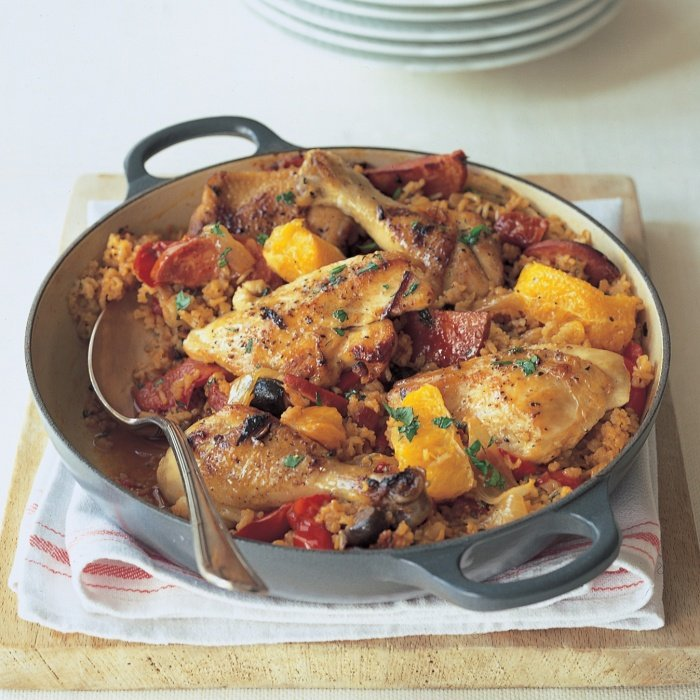
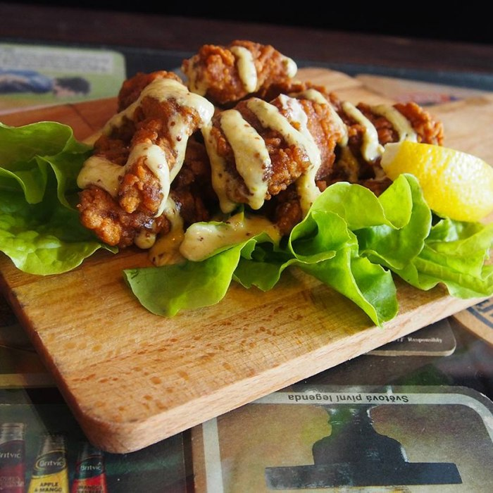

You need to enable JavaScript to run this app.
🍴 Recipe Ideas for Taylor
Search
Brown Stew Chicken
Chicken & mushroom Hotpot
Chicken Alfredo Primavera

Chicken Basquaise
Chicken Congee
Chicken Handi

Chicken Karaage
Kentucky Fried Chicken
Kung Pao Chicken
Pad See Ew
Piri-piri chicken and slaw
Thai Green Curry